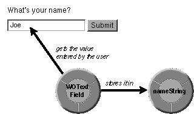

Table of Contents
Table of Contents
 Previous Section
Previous Section
Table of Contents
Previous Section
The template for the Main page contains the following HTML elements:
<HTML>
<HEAD>
<TITLE>Hello World!</TITLE>
</HEAD>
<BODY>
<FORM>
What's your name?
<P>
<WEBOBJECT NAME = "NAME_FIELD"><INPUT TYPE = "TEXT"></WEBOBJECT>
<WEBOBJECT NAME = "SUBMIT_BUTTON"><INPUT TYPE = "SUBMIT"></WEBOBJECT>
</P>
</FORM>
</BODY>
</HTML>
The WEBOBJECT elements---a new kind of markup element introduced by WebObjects Framework---are replaced with dynamically generated HTML when the Hello World application returns the Main page. The declarations file specifies the kind of objects that perform the HTML substitutions.
The declarations file for the Main page contains the following declarations:
NAME_FIELD: WOTextField {value = nameString};
SUBMIT_BUTTON: WOSubmitButton {action = sayHello};
Each line is a declaration that corresponds to a WEBOBJECT element in the template. Each declaration declares an object---a WODynamicElement---to represent its corresponding WEBOBJECT element. The declaration specifies what kind of object will be created and how to configure the it. Specifically, a declaration associates a WODynamicElement with variables and actions defined in the corresponding script file.
The script for the Main page contains the following lines:
id nameString;
- sayHello
{
id nextPage;
nextPage = [WOApp pageWithName:@"Hello"];
[nextPage setNameString:nameString];
return nextPage;
}
Together, these three files (template, declarations, and script) establish what action to take when a user clicks Submit, which is to return the second page with a customized greeting. To accomplish this, the files must do two things:
The declaration for the NAME_FIELD WEBOBJECT element:
NAME_FIELD: WOTextField {value = nameString};
specifies how to store the name entered by the user. It associates the NAME_FIELD element with the nameString variable declared in Main.wos.
The declaration specifies that a WOTextField object will be created to generate HTML for the NAME_FIELD element, and that the variable assigned to the value attribute of the WOTextField object---nameString---will be used to store user input.

Figure 7 Getting and Storing a Value
For more information on WOTextFields, see the "WOTextField" section in the Using Dynamic Elements chapter.
The declaration for the SUBMIT_BUTTON WEBOBJECT element:
SUBMIT_BUTTON: WOSubmitButton {action = sayHello};
specifies how to return the Hello page. It associates the SUBMIT_BUTTON element with the sayHello method defined in Main.wos.
The declaration specifies that a WOSubmitButton will be created to generate HTML for the SUBMIT_BUTTON element, and that the action assigned to the WOSubmitButton object, sayHello, will be invoked when a user submits the form.
The sayHello method finds or creates a component object to represent the Hello page by sending a pageWithName: message to WOApp---the global variable representing Hello World's application object. If an object representing the Hello page doesn't exist already, pageWithName: finds the Hello.wo component directory and creates a component object from it.
Next, sayHello sets the Hello component's nameString variable by sending a message to the Hello component. To access the variables declared in another script file, you use accessor methods. There are two kinds of accessor methods: "set" methods that set the value of a variable and "get" methods that return the value of a variable.
Set methods have the form setVariableName:, where variableName is the name of the script variable. For example, the Hello page declares the variable nameString, so the method setNameString: is automatically available to set its value. Notice that the "n" in the variable name is lowercase. In the method name, it is uppercase. The method name for a set method capitalizes the first letter of the variable name if it's not an uppercase letter, and then prepends the word "set" to it.
Get methods have the form variableName, where variableName is the name of the variable. For example, to get the value of the Hello component's nameString variable, you invoke a method of the same name. In WebScript, both set and get accessor methods are automatically available for all script variables.
After setting the Hello component's nameString variable, sayHello returns the Hello component.
 Next Section
Next Section